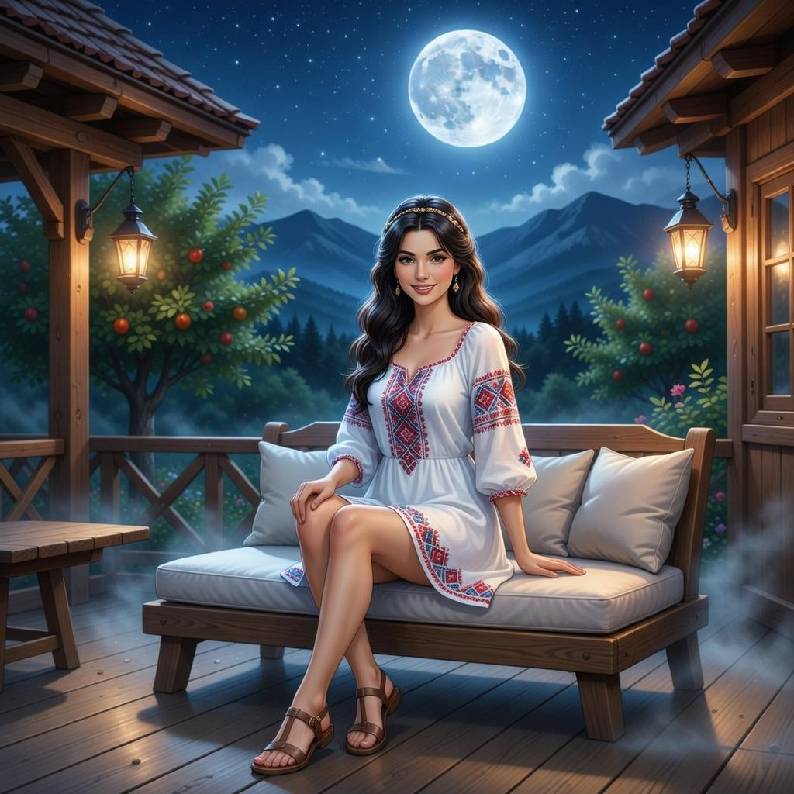
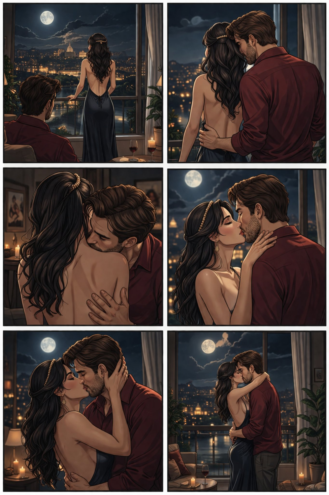

Поглавље 3: Ноћ под пуним месецом
Página individual del capítulo con lectura y ejercicios.


Наташа и Луис завршају вечеру. Наташа гледа Луиса. Она каже: "Луис, желим да дођеш у мој стан. Могу да ти покажем још нешто о Београду."
Луис је срећан. Он каже: "Да, хоћу. Волим твој стан."
Они иду до стана. Наташа отвара врата. Луис улази и види нешто необично. Наташа је обучена у хаљину из 19. века. Хаљина је дуга и лепа.
"Ти изгледаш прелепо," каже Луис.
Наташа се смеје. "Хвала. Волим старе ствари. Ова хаљина је из мог града."
Луис је импресиониран. Он гледа Наташу. Наташа гледа Луиса. Њихове очи се срећу.
Луис се приближава. Он је љуби. Наташа се предаје.
Кроз прозор се види пун месец. Месечина осветљава собу. Луис и Наташа су заједно.
Крај трећег поглавља.
¡Perfecto! Aquí tienes el material para el Capítulo 3, con nuevo vocabulario, un punto gramatical muy útil y nuevos ejercicios.
📚 Lista de Vocabulario Útil - Capítulo 3 📚
🏠 Lugares y Objetos:
- Стан - Apartamento / Piso 🏠
- Врата - Puerta 🚪
- Прозор - Ventana 🪟
- Соба - Habitación 🛏️
- Ствари - Cosas 📦
- Хаљина - Vestido 👗
- Веко - Siglo 📅
- Месечина - Luz de la luna 🌕
💑 Verbos y Acciones:
- Завршавају - Terminan ✅
- Дођеш - Vengas 🚶♂️
- Отвара - Abre 🔓
- Улази - Entra ➡️
- Види - Ve 👀
- Изгледаш - Luces / Te ves ✨
- Љуби - Besa 💋
- Предаје се - Se rinde / Se entrega 🏳️
- Осветљава - Ilumina 💡
😌 Adjetivos y Emociones:
- Необично - Inusual 🤔
- Дуга - Larga 📏
- Прелепо - Precioso / Muy hermoso 🌸
- Импресиониран - Impresionado 😲
- Заједно - Juntos 👫
📘 Gramática Básica: Verbos de Movimiento (IR y VENIR) 📘
En serbio, los verbos de movimiento son muy específicos. Aquí están los dos más importantes del capítulo.
1. ИЋИ (Ići) - IR (movimiento alejándose)
Se usa para indicar movimiento hacia un lugar.
Presente:
- Ја идем (Ja idem) - Yo voy
- Ти идеш (Ti ideš) - Tú vas
- Он / Она / Оно иде (On / Ona / Ono ide) - Él / Ella / Eso va
- Ми идемо (Mi idemo) - Nosotros vamos
- Ви идете (Vi idete) - Vosotros vais / Ustedes van
- Они / Оне / Она иду (Oni / One / Ona idu) - Ellos / Ellas van
Ejemplo del texto:
- Они иду до стана. (Ellos van al apartamento).
2. ДОЋИ (Doći) - VENIR (movimiento acercándose)
Se usa para indicar movimiento hacia donde está el hablante.
Presente:
- Ја дођем (Ja dođem) - Yo vengo
- Ти дођеш (Ti dođeš) - Tú vienes
- Он / Она / Оно дође (On / Ona / Ono dođe) - Él / Ella / Eso viene
- Ми дођемо (Mi dođemo) - Nosotros venimos
- Ви дођете (Vi dođete) - Vosotros venís / Ustedes vienen
- Они / Оне / Она дођу (Oni / One / Ona dođu) - Ellos / Ellas vienen
Ejemplo del texto:
- Желим да дођеш у мој стан. (Quiero que vengas a mi apartamento).
✍️ Ejercicios de Práctica - Capítulo 3 ✍️
Ejercicio 1: Traducción Sencilla
Traduce estas frases del Capítulo 3 al español.
1. Наташа отвара врата.
2. Луис улази и види нешто необично.
3. Ти изгледаш прелепо.
4. Волим старе ствари.
5. Њихове очи се срећу.
1. Natasha abre la puerta.
2. Luis entra y ve algo inusual.
3. Luces preciosa / Te ves preciosa.
4. Me gustan las cosas antiguas.
5. Sus miradas se encuentran / Sus ojos se encuentran.
Ejercicio 2: Completa con el Verbo Correcto
Elige entre ИЋИ (ide) o ДОЋИ (dođe).
1. Они _______ до стана. (Van al apartamento).
2. Желим да _______ у мој стан. (Quiero que vengas a mi apartamento).
3. Ми _______ у Београд сутра. (Vamos a Belgrado mañana).
4. Да ли _______ на вечеру? (¿Vienes a cenar?).
1. иду (van - movimiento hacia un lugar)
2. дођеш (vengas - movimiento hacia mí)
3. идемо (vamos - movimiento hacia un lugar)
4. долазиш / долазите (Vienes - forma de cortesía. Nota: "Dolaziti" es otro sinónimo muy común de "Doći")
Ejercicio 3: Conjugación de Verbos
Conjuga el verbo ГЛЕДАТИ (Mirar) en presente.
- Ја гледам
- Ти гледаш
- Он / Она / Оно гледа
- Ми гледамо
- Ви гледате
- Они / Оне / Она гледају
Ejercicio 4: Forma tu propia frase
Crea una frase usando uno de los verbos de movimiento que aprendiste (ИЋИ o ДОЋИ).
Ejemplo: Идем у парк. (Voy al parque).
Tu frase: _________________________________